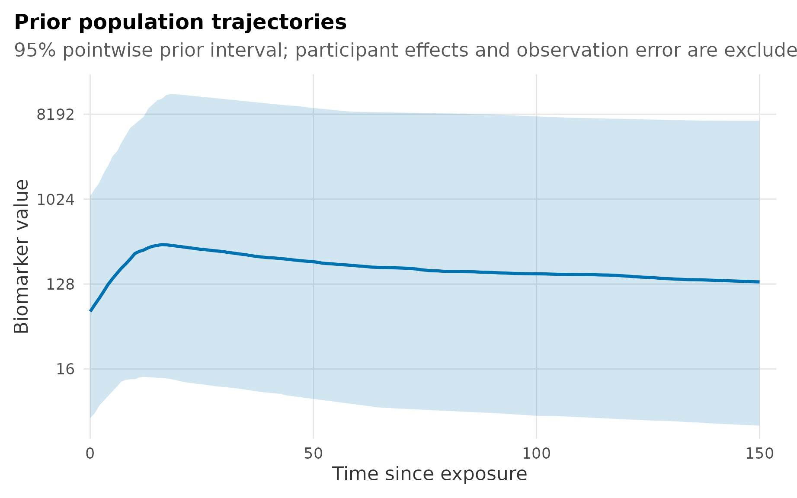

Why inspect the priors?
The six kinetic quantities have different units and typical magnitudes. A baseline is measured in log2 outcome units, a transition time may span tens of days, and a late-waning rate may be only a few thousandths per day. Priors should therefore be inspected on both their parameter scales and the implied trajectory scale before fitting.
epikinetics_priors() returns one complete, printable
prior specification:
library(epikinetics)
priors <- epikinetics_priors()
priors
#> parameter population_mean population_sd participant_sd_scale
#> baseline 6.000 2e+00 0.75
#> time_to_peak 10.000 5e+00 0.35
#> waning_duration 50.000 2e+01 0.50
#> boost_rate 0.250 1e-01 0.35
#> early_waning_rate 0.020 1e-02 0.50
#> late_waning_rate 0.002 5e-03 0.75
#> covariate_sd
#> 0.50
#> 0.35
#> 0.50
#> 0.35
#> 0.50
#> 0.75
#>
#> Observation SD half-Normal scale: 1The object contains three distinct parts:
- population priors for the six biomarker-specific kinetic quantities;
- scale priors for participant effects and regression coefficients; and
- the scale prior for residual observation error.
Passing this object to prepare_epikinetics_data() stores
the exact prior specification with the prepared data and subsequently
with the fit.
prepared <- prepare_epikinetics_data(
data = dat,
formula = ~ infection_history,
lower_limit = 5,
upper_limit = 2560,
priors = priors
)Population priors
Population priors are Normal distributions specified as
c(mean, sd). Baseline is unconstrained. The other five
population quantities are positive, so their Normal distributions are
truncated at zero:
| Quantity | Units and interpretation |
|---|---|
baseline |
Expected log2 outcome at the focal exposure. |
time_to_peak |
Time from exposure to peak, in the input time unit. |
waning_duration |
Time from peak to the early/late waning switch. |
boost_rate |
Log2 increase per input time unit before the peak. |
early_waning_rate |
Positive magnitude of the first log2 decline rate. |
late_waning_rate |
Positive magnitude of the later log2 decline rate. |
Every biomarker has its own population parameter, with the configured prior applied to each. The priors are independent before conditioning on data.
For a log2-linear waning rate (r), the response halves after (1/r) time units. This can help translate a rate prior into a scientifically familiar half-life. Very small positive rates appropriately imply very long half-lives.
Prior trajectory check
The plot method draws population kinetic parameters and passes every draw through the piecewise kinetic curve. It deliberately excludes participant effects and residual observation error. The result is therefore a prior check for the latent population trajectory, not a full prior predictive distribution for future measurements.

Latent population trajectories implied by the default kinetic-parameter priors. The line is the pointwise median and the ribbon is the pointwise 95% prior interval; participant variation and observation error are excluded.
On the response scale, the vertical axis uses log2 spacing while retaining natural measurement labels. This is important: uncertainty that is additive on the fitted log2 scale becomes multiplicative after transforming back to the response scale. A linear response axis can make a coherent prior look like a nearly flat median under an enormous ribbon.
Increasing ndraws makes the estimated quantiles more
stable; it does not make the prior distribution narrower. Use
probs to request another clearly labelled interval when
that is useful, or use scale = "model" to inspect the same
trajectories directly in log2 units:
If the population trajectory interval is scientifically implausible, revise the underlying parameter priors rather than clipping the plot. Participant and observation priors should be assessed separately because they answer different questions and can otherwise obscure which component is driving the variation.
Participant and covariate scales
Participant standard deviations have half-Normal priors. They act additively for baseline and on the log scale for positive time and rate quantities. For a positive quantity, a participant effect of (u) therefore multiplies the conditional population value by .
The default participant hierarchy is selected during data preparation. It includes baseline, boost rate, early-waning rate, and late-waning rate; peak timing and waning duration are shared across participants by default. Priors for inactive participant effects are retained in the inspectable prior object but do not create parameters in Stan.
Regression coefficients have zero-centred Normal priors. A baseline
coefficient is an additive shift in log2 outcome units. Coefficients for
positive timing or rate quantities are log ratios, so exponentiating a
coefficient gives its multiplicative effect. covariate_sd
specifies the prior standard deviation for each kinetic quantity on the
corresponding link scale.
Observation error
observation_sd is the half-Normal scale for residual
Normal error on the model’s log2 scale. It is not included in the
population trajectory plot above. Including it would answer a different
question: the distribution of a future observed measurement around the
latent curve.
After fitting,
predict(..., include_observation_noise = FALSE) returns
latent trajectory uncertainty, while
include_observation_noise = TRUE returns an explicitly
labelled posterior predictive interval. The same distinction should be
maintained when reasoning about priors.
Overriding defaults
Override only quantities for which there is a scientific or measurement-based reason. Unspecified fields retain their defaults:
priors <- epikinetics_priors(
time_to_peak = c(mean = 12, sd = 4),
early_waning_rate = c(mean = 0.025, sd = 0.01),
late_waning_rate = c(mean = 0.003, sd = 0.003),
participant_sd = c(
baseline = 0.75,
time_to_peak = 0.35,
waning_duration = 0.50,
boost_rate = 0.35,
early_waning_rate = 0.50,
late_waning_rate = 0.75
),
covariate_sd = c(
baseline = 0.50,
time_to_peak = 0.35,
waning_duration = 0.50,
boost_rate = 0.35,
early_waning_rate = 0.50,
late_waning_rate = 0.75
),
observation_sd = 0.75
)
priors
#> parameter population_mean population_sd participant_sd_scale
#> baseline 6.000 2e+00 0.75
#> time_to_peak 12.000 4e+00 0.35
#> waning_duration 50.000 2e+01 0.50
#> boost_rate 0.250 1e-01 0.35
#> early_waning_rate 0.025 1e-02 0.50
#> late_waning_rate 0.003 3e-03 0.75
#> covariate_sd
#> 0.50
#> 0.35
#> 0.50
#> 0.35
#> 0.50
#> 0.75
#>
#> Observation SD half-Normal scale: 0.75Named participant and covariate scale vectors must contain all six quantities. This makes omissions visible rather than silently applying a value to the wrong parameter.
Stan parameterisation
Stan samples unconstrained standard-Normal raw variables and maps them through the inverse CDF of the configured truncated- or half-Normal prior. The implementation uses complementary probabilities in the upper tail and a value-and-gradient matched continuation beyond the range carrying material Normal probability. Within that range, it is the exact inverse-CDF transport.
This separates three concepts: positivity defines the support of a reported quantity; the inverse-CDF map supplies its prior; and participant random effects are non-centred separately through their standardised effects. The transport also puts Stan’s default initial values on the scale of each configured prior, which avoids poor geometry when timing, rate, and scale parameters differ by orders of magnitude.
The Kinetics model and statistical structure vignette describes how these parameters enter the hierarchical model and likelihood.